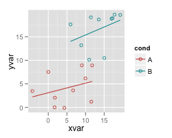
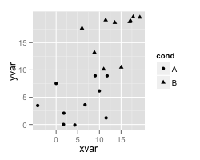

Scatterplots (ggplot2)
Table of contents
Problem
You want to make a scatterplot.
Solution
Suppose this is your data:
set.seed(955) # Make some noisily increasing data dat <- data.frame(cond = rep(c("A", "B"), each=10), xvar = 1:20 + rnorm(20,sd=3), yvar = 1:20 + rnorm(20,sd=3)) # cond xvar yvar # A -4.252354091 3.473157275 # A 1.702317971 0.005939612 # ... # B 17.793359218 19.718587761 # B 19.319909163 19.647899863 library(ggplot2)
Basic scatterplots with regression lines
ggplot(dat, aes(x=xvar, y=yvar)) + geom_point(shape=1) # Use hollow circles ggplot(dat, aes(x=xvar, y=yvar)) + geom_point(shape=1) + # Use hollow circles geom_smooth(method=lm) # Add linear regression line # (by default includes 95% confidence region) ggplot(dat, aes(x=xvar, y=yvar)) + geom_point(shape=1) + # Use hollow circles geom_smooth(method=lm, # Add linear regression line se=FALSE) # Don't add shaded confidence region ggplot(dat, aes(x=xvar, y=yvar)) + geom_point(shape=1) + # Use hollow circles geom_smooth() # Add a loess smoothed fit curve with confidence region
Set color/shape by another variable
# Set color by cond ggplot(dat, aes(x=xvar, y=yvar, color=cond)) + geom_point(shape=1) # Same, but with different colors and add regression lines ggplot(dat, aes(x=xvar, y=yvar, color=cond)) + geom_point(shape=1) + scale_colour_hue(l=50) + # Use a slightly darker palette than normal geom_smooth(method=lm, # Add linear regression lines se=FALSE) # Don't add shaded confidence region # Extend the regression lines beyond the domain of the data ggplot(dat, aes(x=xvar, y=yvar, color=cond)) + geom_point(shape=1) + scale_colour_hue(l=50) + # Use a slightly darker palette than normal geom_smooth(method=lm, # Add linear regression lines se=FALSE, # Don't add shaded confidence region fullrange=T) # Extend regression lines # Set shape by cond ggplot(dat, aes(x=xvar, y=yvar, shape=cond)) + geom_point() # Same, but with different shapes ggplot(dat, aes(x=xvar, y=yvar, shape=cond)) + geom_point() + scale_shape_manual(values=c(1,2)) # Use a hollow circle and triangle
 
See Colors (ggplot2) and Shapes and line types for more information about colors and shapes.
Handling overplotting
If you have many data points, or if your data scales are discrete, then the data points might overlap and it will be impossible to see if there are many points at the same location.
# Round xvar and yvar to the nearest 5 dat$xrnd <- round(dat$xvar/5)*5 dat$yrnd <- round(dat$yvar/5)*5 # Make each dot partially transparent, with 1/4 opacity # For heavy overplotting, try using smaller values ggplot(dat, aes(x=xrnd, y=yrnd)) + geom_point(shape=19, # Use solid circles alpha=1/4) # 1/4 opacity # Jitter the points # Jitter range is 1 on the x-axis, .5 on the y-axis ggplot(dat, aes(x=xrnd, y=yrnd)) + geom_point(shape=1, # Use hollow circles position=position_jitter(width=1,height=.5))
/scatter-overplot-jitter.png)